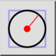

Középpont, sugár
Eszköztár / ikon:


Menü: Rajzolás > Kör > Középpont, sugár
Rövidítés: C, R
Parancsok: circlecr | cr
Ez egy automatikus fordítás.
Eszköztár / ikon:


Ez az eszköz lehetővé teszi körök létrehozását adott középponttal és sugárral.